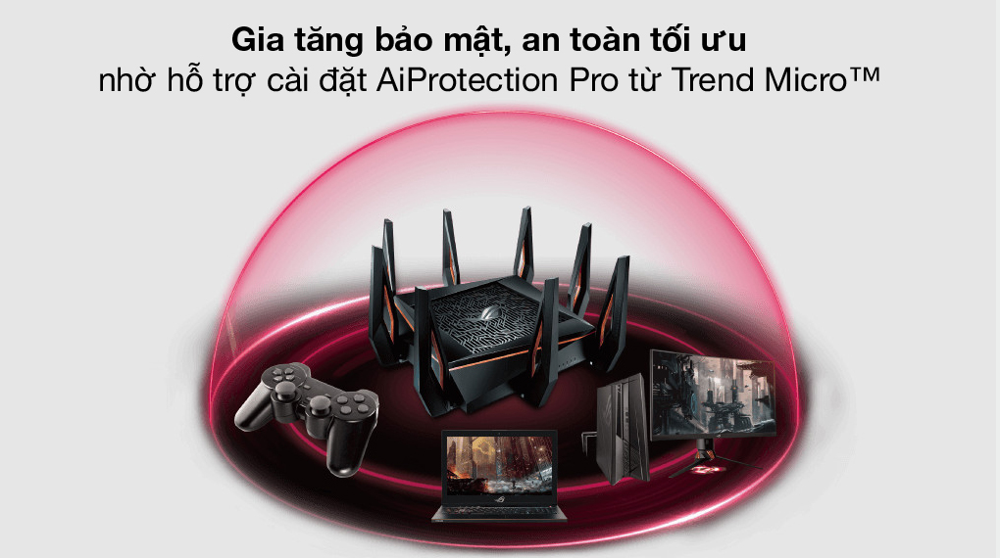

Bộ Phát Sóng Wifi Router Chuẩn Wifi 6 AX11000 Asus GT-AX11000 Gigabit Đen

Đặc điểm nổi bật
- Hỗ trợ chuẩn WiFi mới nhất 802.11AX (Wifi 6) và băng thông 160 MHz cho hiệu quả kết nối tốt hơn.
- Tốc độ kết nối không dây lên tới 4804 Mbps trên 2 băng tần 5 GHz và 1148 Mbps trên băng tần 2.4 GHz.
- Phân bổ hiệu quả các kênh, giao tiếp với nhiều thiết bị cùng lúc với công nghệ OFDMA.
- Tương thích với hệ thống WiFi ASUS AiMesh để phủ sóng rộng cho toàn bộ ngôi nhà.
- Bảo mật tốt hơn nhờ công nghệ AiProtection Pro được tăng cường bởi Trend Micro.
- Hỗ trợ 2 cổng USB 3.1, 4 cổng LAN và 1 cổng WAN kết nối được với nhiều loại thiết bị.
Thông tin chi tiết
Router 3 băng tần với chuẩn Wifi thế hệ thứ 6 802.11ax cho độ tương thích cao, tốc độ đường truyền siêu nhanh, ổn định
Router Wifi Asus GT-AX11000 kết nối không dây cực nhạy với 3 băng tần, bao gồm 2 băng tần 5 GHz tốc độ lên đến 4804 Mbps và 1148 Mbps trên băng tần 2.4 GHz đảm bảo kết nối tức thì các thiết bị sử dụng mạng của bạn vào hệ thống của bộ định tuyến, trải nghiệm đường truyền siêu mượt trên mọi tác vụ được yêu cầu.

Tốc độ đường truyền tốt hơn đến 2.53 lần so với chuẩn Wifi 802.11ac ở mọi nhu cầu kết nối như chơi game, lướt web, xem phim trực tuyến hay truyền tải dữ liệu công việc, hiệu suất đạt được đều thật ấn tượng và hài lòng cho người dùng.
Vùng phủ sóng rộng hơn với công nghệ OFDMA cùng 8 ăng-ten 5 dBi
Công ngệ OFDMA có khả năng chia nhỏ kênh truyền dữ liệu thành các tần số nhỏ hơn, giúp gửi nhiều tín hiệu trong cùng một phiên truyền dữ liệu, để nhiều thiết bị có thể truy cập đồng thời vào hệ thống mạng của Asus GT-AX11000 mà không bị tăng độ trễ hay giảm tốc độ đường truyền. Được tối ưu băng thông tốt giúp router cung cấp đường truyền chất lượng cao ổn định cho cùng lúc tới 90 thiết bị truy cập và có độ phủ sóng bán kính khoảng 25 m.
Ngoài ra, router còn được hỗ trợ ASUS AiMesh cho phép liên kết hiệu quả các bộ định tuyến ASUS để hình thành mạng wifi với độ phủ sóng rộng hơn bao phủ tất cả các căn phòng trong ngôi nhà, chuyển vùng liền mạch để ở bất kỳ vị trí nào bạn cũng có được kết nối internet hoàn hảo nhất từ hệ thống mạng của ASUS Router.
Kết nối đồng thời với nhiều thiết bị nhờ hỗ trợ 2 cổng USB 3.1, 4 cổng LAN và 1 cổng WAN Gigabit
Cổng WAN/LAN 2.5G hỗ trợ truyền dữ liệu nhanh hơn 2.5 lần so với Ethernet thông thường để ở mọi hình thức kết nối, chất lượng đường truyền của bạn đều được tối ưu.
Asus GT-AX11000 thiết kế ưu tiên cho nhu cầu chiến game chuyên nghiệp, được hỗ trợ bởi CPU 4 nhân 1.8 GHz 64-bit dễ dàng xử lý chơi game trực tuyến, tăng tốc truyền dữ liệu USB và tăng sức mạnh cho các bên kết nối LAN, để khả năng thắng lợi trên mỗi trận chiến trở nên cao hơn, nhờ ưu thế về hệ thống mạng.
Lựa chọn tần số động (DFS) tối ưu hóa tốc độ chiến game
Router Asus 3 băng tần này cho phép bạn dành riêng 1 băng tần 5 GHz để chơi game. Và với tính năng lựa chọn tần số động (DFS), Asus GT-AX11000 cho phép tùy chỉnh các dải tần DFS qua nút tùy biến phía trước bộ định tuyến, mở khóa tới 15 kênh trong các băng tần 5 GHz, đem lại đường truyền Wifi ổn định nhất cho các thiết bị của bạn.
Hỗ trợ cài đặt AiProtection Pro từ Trend Micro, gia tăng bảo mật
AiProtection Pro do Trend Micro cung cấp bảo vệ các thiết bị truy cập vào hệ thống mạng của router, chống lại các mối nguy cơ trước khi chúng tiếp cận được các thiết bị của bạn, bảo vệ tốt cả trên các thiết bị không thể cài đặt phần mềm chống virus như máy chơi game console, thiết bị IoT.
Khuấy động không gian giải trí của bạn với công nghệ chiếu sáng Aura RGB
Router với kích thước nhỏ gọn và ngoại hình ấn tượng, tạo điểm nhấn cho mọi vị trí mà nó lắp đặt, đặc biệt khi sử dụng cùng công nghệ chiếu sáng Aura RGB. Các gamer hẳn không lạ lẫm với hiệu ứng đèn RGB trên các thiết bị chiến game quen thuộc, nay được tích hợp cả trên bộ định tuyến của ASUS, tạo sự hòa nhập tốt hơn, khuấy động hoàn hảo không gian giải trí sắc màu của bạn.
Một thiết bị mạng đầy ưu tú để lựa chọn cho không gian làm việc và giải trí tại gia đình, văn phòng,… Bộ Phát Sóng Wifi Router Chuẩn Wifi 6 AX11000 Asus GT-AX11000 Gigabit chắc chắn sẽ khiến bạn hài lòng qua từng trải nghiệm internet mà nó mang lại.
Thông số kỹ thuật Router Wifi Mesh 3 Pack AC1300 TP-Link Deco M5 Trắng
-
Tốc độ:
1148 Mbps (băng tần 2.4GHz)4804 Mbps (băng tần 5GHz) x 2 -
Băng tần:
2.4GHz & 5GHz x 2 -
Số ăng-ten:
8 ăng ten 5dBi -
Truy cập tối đa:
90 user -
Mật độ phủ sóng (bán kính):
25 m -
Các cổng kết nối:
1 x WAN2 x USB 3.14 x LAN -
Nút bấm hỗ trợ:
1 nút Reset1 nút WPSNút Mở/Tắt nguồn -
Thương hiệu của:
Đài Loan -
Sản xuất tại:
Trung Quốc -
Hãng
Asus